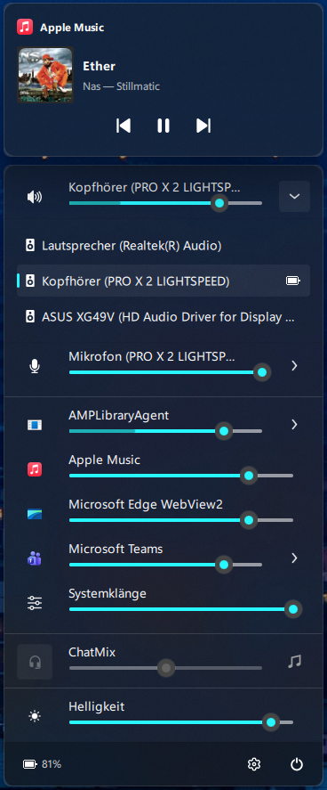
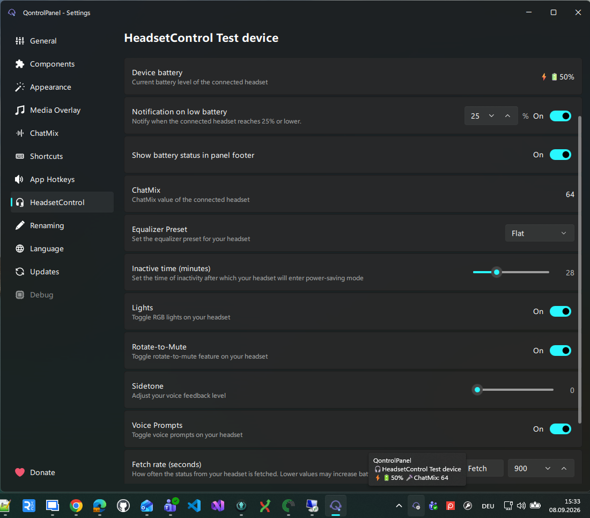

Audio on your terms
Adjust output and microphone volume, mute instantly, and switch devices without opening Windows settings.
Sound, music, displays, and headsets finally feel close at hand. QontrolPanel brings the settings you reach for every day into one customizable panel.
Free and open source Windows 10 and 11

Everything you need to adjust, switch, or check is right where you expect it.
Adjust output and microphone volume, mute instantly, and switch devices without opening Windows settings.
Set individual app volumes. Keep communication apps balanced with ChatMix and remember the levels you like.
See track details and artwork, then play, pause, skip, or seek through supported media sessions.
Change monitor brightness and toggle Windows Night Light from the same compact panel.
Check battery status and access the controls supported by your headset through HeadsetControl.
Customize the layout, add global shortcuts and app hotkeys, and keep power actions at hand.
Supported devices can bring battery level, ChatMix, sidetone, equalizer presets, lighting, and more into QontrolPanel.
Choose what appears in your panel and set low battery alerts from the settings window.
Check supported headsets
Pick the installation method that fits your setup.
Grab the latest installer, or download the portable archive and run bin/QontrolPanel.exe.
Use Windows Package Manager from a terminal.
winget install ChrisLauinger77.QontrolPanelQontrolPanel is open source under the GPL-3.0 license. Explore the source on GitHub ↗